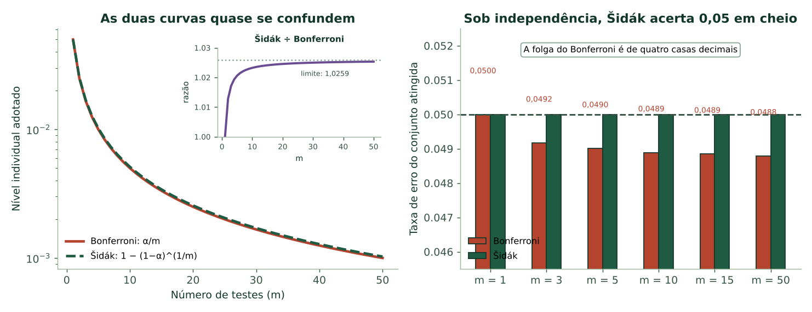
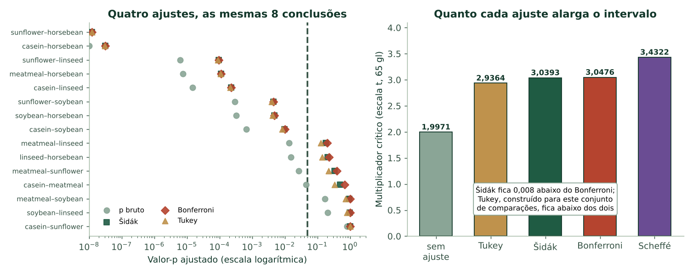

Ajuste de Šidák
Versão exata do ajuste de Bonferroni quando os testes são independentes, com um nível individual ligeiramente maior.
Comece por aqui
O ajuste de Bonferroni usa uma desigualdade: a chance da união é no máximo a soma das chances. Šidák substitui a desigualdade pela igualdade exata — que vale quando os testes são independentes. O resultado é um nível individual ligeiramente maior e, portanto, um pouco mais de poder.
Com m = 15, Bonferroni exige 0,003333 por teste e Šidák, 0,003417: apenas 2,5% a mais de folga. Essa razão cresce com m, mas converge rápido para \(-\ln(1-\alpha)/\alpha\approx1{,}0259\). O ganho nunca passa de 2,6%. Vale saber que Šidák existe; raramente vale trocar por ele uma decisão.
O que é o ajuste
Se \(m\) testes são independentes e cada um rejeita indevidamente com probabilidade \(\alpha^\ast\), a probabilidade de nenhum rejeitar é \((1-\alpha^\ast)^m\). Igualando o complemento ao nível global desejado e resolvendo para \(\alpha^\ast\) chega-se diretamente à fórmula de Šidák. Não há desigualdade no caminho: sob independência, a taxa de erro do conjunto fica exatamente em \(\alpha\).

Nas comparações pareadas de uma ANOVA os testes não são independentes: cada grupo entra em várias delas, e todos compartilham o mesmo quadrado médio do resíduo. Nessa situação, Šidák deixa de ser exato e volta a ser conservador, como Bonferroni. A simulação do exemplo mostra os dois em 4,03% e 4,09% — a vantagem teórica evapora. Para comparações pareadas, o método construído para a dependência correta é o de Tukey.
Pressupostos e como verificá-los
| Pressuposto | Por que importa | Como verificar |
|---|---|---|
| Cada valor-p individual é válido | O ajuste trata a multiplicidade, não a validade. | Verifique os pressupostos de cada teste. |
| Família definida antes da análise | Como em qualquer ajuste. | Plano de análise. |
| Independência entre os testes | É o que torna a fórmula exata. | Pela estrutura do problema; não há teste prático. |
| Dependência positiva, na falta de independência | Šidák continua controlando a taxa de erro, de forma conservadora. | Natureza dos testes. |
| Valores-p contínuos | Com valores-p discretos, o ajuste fica ainda mais conservador. | Tipo de teste empregado. |
Šidák não garante o controle da taxa de erro sob dependência negativa arbitrária, porque a identidade \((1-\alpha^\ast)^m\) deixa de ser um limite. Em situações de dependência desconhecida ou negativa, Bonferroni e Holm são as escolhas seguras, já que não supõem nada.
Hipóteses e estatística de teste
Como Bonferroni, Šidák é um ajuste, não um teste. O que ele controla é a taxa de erro do conjunto:
Em que:
- \(m\)
- número de testes da família
- \(\alpha\)
- taxa de erro do conjunto pretendida
- \(\alpha^{\ast}\)
- nível individual adotado
- \(p_i\)
- valor-p bruto do i-ésimo teste
- \(p_i^{\text{aj}}\)
- valor-p ajustado
Exemplo numérico, passo a passo
Com \(\alpha=0{,}05\) e \(m=15\): Bonferroni usa \(0{,}05/15=0{,}0033333\); Šidák usa \[\begin{aligned}&1-(1-0{,}05)^{1/15} \\ &= 1-0{,}95^{0{,}0\overline{6}} \\ &= 0{,}0034137.\end{aligned}\]
A razão é \(0{,}0034137/0{,}0033333=1{,}0241\): Šidák é 2,4% menos exigente.
Na escala do teste t com 65 graus de liberdade, o valor crítico passa de 3,0476 (Bonferroni) para 3,0393 (Šidák) — uma diferença de 0,008.
Para a comparação casein − soybean, com \(p=0{,}00067\): Bonferroni dá \(15\times0{,}00067=0{,}00998\); Šidák dá \(1-(1-0{,}00067)^{15}=0{,}00993\).
Para a comparação casein − meatmeal, com \(p=0{,}04557\): Bonferroni dá 0,68350 e Šidák, 0,50320. A diferença entre os dois é grande em termos relativos, mas ambos estão longe de 0,05: nenhuma conclusão muda.
Em valores-p pequenos, \(1-(1-p)^m\approx mp\) — a aproximação de primeira ordem —, e os dois métodos coincidem. A diferença só aparece quando \(p\) é grande, exatamente onde a decisão já está tomada.
Holm–Šidák: a versão sequencial
Assim como Holm melhora Bonferroni aplicando-o passo a passo, Holm–Šidák melhora Šidák pelo mesmo mecanismo: o \(i\)-ésimo menor valor-p enfrenta \(1-(1-\alpha)^{1/(m-i+1)}\) em vez de \(1-(1-\alpha)^{1/m}\).
É o procedimento mais poderoso dos quatro, ao custo de supor independência. Entre Holm e Holm–Šidák, a diferença é a mesma de sempre: menos de 2,6%.
Propriedades
- \(\alpha/m<1-(1-\alpha)^{1/m}\) para todo \(m>1\): Šidák é sempre menos exigente.
- A razão entre os dois níveis tende a \(-\ln(1-\alpha)/\alpha\), que vale 1,0259 para \(\alpha=0{,}05\).
- Sob independência, atinge exatamente a taxa pretendida; sob dependência positiva, fica abaixo dela.
- Para valores-p pequenos, \(1-(1-p)^m\approx mp\): os dois ajustes coincidem onde importa.
- Fornece intervalos simultâneos diretos, trocando o multiplicador crítico.
- É o ajuste que o pacote
emmeansaplica comadjust = "sidak".
Como interpretar os resultados
| Elemento | O que informa | Cuidado |
|---|---|---|
| p ajustado | Compare com α. | Quase igual ao de Bonferroni quando p é pequeno. |
| Nível individual | A exigência por teste. | No máximo 2,6% acima do de Bonferroni. |
| Razão Šidák/Bonferroni | O ganho do método. | Limitada a 1,0259. |
| Holm–Šidák | Versão sequencial, mais poderosa. | Supõe independência. |
| Taxa atingida sob dependência | Abaixo de α. | A vantagem teórica desaparece. |
Reporte a família, o número de testes, o método e os valores-p ajustados. Se usar Šidák, justifique por que a independência é plausível — e, se não for, prefira Holm.
Como executar no R e em Python
Onde executar o código em Python
Não é preciso instalar nada: o Google Colab é um computador na nuvem, gratuito, que executa Python pelo navegador e já traz as bibliotecas usadas aqui (numpy, scipy e matplotlib).
Não há função dedicada no R base: o ajuste de Šidák se obtém diretamente com 1 - (1 - p)^m, e p.adjust() não o inclui entre seus métodos. O pacote emmeans aceita adjust = "sidak" em qualquer comparação, e mutoss traz os procedimentos de passo único e sequencial. Para os intervalos simultâneos, basta trocar o multiplicador crítico por qt(1 - (1 - (1 - alfa)^(1/m))/2, gl).
sidak <- 1 - (1 - p)^m # p = vetor de valores-p brutos
emmeans::pairs(emmeans::emmeans(modelo, ~feed), adjust = "sidak")
Exemplo de aplicação
Contexto dos dados
chickwts registra o peso, aos seis dias, de 71 pintinhos alimentados com seis rações diferentes. Os grupos têm tamanhos ligeiramente desiguais (de 10 a 14 aves), os resíduos passam no teste de normalidade (p = 0,627) e as variâncias são homogêneas (Brown–Forsythe p = 0,590). A ANOVA devolve F(5; 65) = 15,365 com p = 5,9 × 10⁻¹⁰: há diferença, e a pergunta passa a ser onde. Com seis rações são quinze comparações — e é esse número que cria o problema de multiplicidade. As fichas de Bonferroni, Šidák, Tukey e Games–Howell usam este mesmo conjunto, para que os resultados possam ser comparados diretamente.
Código em R
# Ajuste de Šidák: exemplo completo ----
# Pacotes: stats (base). Opcionais: emmeans, mutoss
# install.packages(c("emmeans", "mutoss"))
# 1. A fórmula, em uma linha
alfa <- 0.05; m <- 15
alfa / m # Bonferroni
1 - (1 - alfa)^(1/m) # Šidák
(1 - (1 - alfa)^(1/m)) / (alfa / m) # quanto Šidák é menos exigente
# 2. Como as duas se comportam quando m cresce
comparacao <- data.frame(
m = c(1, 2, 3, 5, 10, 15, 20, 50, 100, 1000),
bonferroni = alfa / c(1, 2, 3, 5, 10, 15, 20, 50, 100, 1000),
sidak = 1 - (1 - alfa)^(1 / c(1, 2, 3, 5, 10, 15, 20, 50, 100, 1000)))
comparacao$razao <- comparacao$sidak / comparacao$bonferroni
round(comparacao, 8)
# 3. Taxa de erro do conjunto que cada um atinge, SE os testes forem independentes
mm <- c(1, 3, 5, 10, 15, 50)
data.frame(m = mm,
sem_ajuste = 1 - (1 - alfa)^mm,
bonferroni = 1 - (1 - alfa/mm)^mm,
sidak = 1 - (1 - (1 - (1 - alfa)^(1/mm)))^mm)
# 4. Aplicando aos dados: chickwts
data(chickwts)
modelo <- aov(weight ~ feed, data = chickwts)
summary(modelo)
brutos <- with(chickwts, pairwise.t.test(weight, feed, p.adjust.method = "none"))$p.value
p <- as.vector(brutos); p <- p[!is.na(p)]
m <- length(p); m
sidak <- 1 - (1 - p)^m # Šidák de passo único
bonferroni <- p.adjust(p, "bonferroni")
holm <- p.adjust(p, "holm")
# Holm-Šidák (passo descendente): sequencial, usando a fórmula de Šidák
ordem <- order(p); hs <- numeric(m); acumulado <- 0
for (i in seq_len(m)) {
acumulado <- max(acumulado, 1 - (1 - p[ordem[i]])^(m - i + 1))
hs[ordem[i]] <- min(1, acumulado)
}
resultado <- data.frame(p_bruto = p, sidak, bonferroni, holm, holm_sidak = hs)
round(resultado[order(p), ], 5)
colSums(resultado < 0.05) # quantas sobrevivem a cada ajuste
# 5. Šidák em emmeans, onde ele aparece com nome próprio
library(emmeans)
em <- emmeans(modelo, ~feed)
pairs(em, adjust = "sidak")
pairs(em, adjust = "bonferroni")
pairs(em, adjust = "tukey")
# 6. Intervalos simultâneos: multiplicadores críticos lado a lado
gl <- df.residual(modelo); k <- nlevels(chickwts$feed)
c(sem_ajuste = qt(1 - alfa/2, gl),
sidak = qt(1 - (1 - (1 - alfa)^(1/m))/2, gl),
bonferroni = qt(1 - alfa/(2*m), gl),
tukey = qtukey(1 - alfa, k, gl) / sqrt(2),
scheffe = sqrt((k - 1) * qf(1 - alfa, k - 1, gl)))
# 7. Gráfico: as duas curvas de nível individual
curve(0.05/x, 1, 50, log = "y", col = "red", lwd = 2,
xlab = "Número de testes (m)", ylab = "Nível individual")
curve(1 - 0.95^(1/x), 1, 50, col = "darkgreen", lwd = 2, lty = 2, add = TRUE)
legend("topright", c("Bonferroni", "Šidák"), col = c("red", "darkgreen"), lwd = 2, lty = 1:2)
A mesma análise em Python, com os resultados
Cole o código em um notebook do Google Colab ↗ e execute com Shift+Enter. Os valores abaixo são a saída desse código.
# Bibliotecas: numpy, scipy e matplotlib (já instaladas no Google Colab)
import numpy as np
from scipy import stats
import itertools
# Dados: chickwts (R). Peso (g) de 71 pintinhos aos 6 dias, segundo seis rações.
# É o mesmo conjunto usado nas fichas de Bonferroni e de Tukey, para comparação direta.
dados = {
"horsebean": [179,160,136,227,217,168,108,124,143,140],
"linseed": [309,229,181,141,260,203,148,169,213,257,244,271],
"soybean": [243,230,248,327,329,250,193,271,316,267,199,171,158,248],
"sunflower": [423,340,392,339,341,226,320,295,334,322,297,318],
"meatmeal": [325,257,303,315,380,153,263,242,206,344,258],
"casein": [368,390,379,260,404,318,352,359,216,222,283,332]}
nomes = list(dados)
gs = [np.array(v, float) for v in dados.values()]
k = len(gs); ns = np.array([len(g) for g in gs], float); N = int(ns.sum())
medias = np.array([g.mean() for g in gs])
QM = np.sum((ns - 1) * np.array([g.var(ddof=1) for g in gs])) / (N - k)
gl = N - k
m = k * (k - 1) // 2
print(f"ANOVA: F({k-1}; {gl}) = {stats.f_oneway(*gs)[0]:.4f} | QM do resíduo = {QM:.3f} | m = {m} comparações")
# 1. A conta exata contra a desigualdade de Bonferroni
alfa = 0.05
print("\nO nível individual que cada ajuste adota, para um alfa global de 5%")
print(" m testes Bonferroni: alfa/m Šidák: 1-(1-alfa)^(1/m) razão Šidák/Bonferroni")
for mm in (1, 2, 3, 5, 10, 15, 20, 50, 100, 1000):
b = alfa / mm
s = 1 - (1 - alfa)**(1/mm)
print(f" {mm:5d} {b:16.8f} {s:22.8f} {s/b:21.6f}")
print("\nŠidák é sempre um pouco menos exigente, e a vantagem encolhe quando m cresce:")
print("com m = 15, o nível individual passa de 0,00333 para 0,00342, apenas 2,5% maior.")
# 2. Taxa de erro do conjunto, sob independência
print("\nSe os m testes fossem independentes, a taxa de erro do conjunto seria:")
print(" m testes sem ajuste com Bonferroni com Šidák")
for mm in (1, 3, 5, 10, 15, 50):
print(f" {mm:5d} {1-(1-alfa)**mm:10.6f} {1-(1-alfa/mm)**mm:14.6f} "
f"{1-(1-(1-(1-alfa)**(1/mm)))**mm:9.6f}")
print("Šidák atinge exatamente 0,05; Bonferroni fica abaixo. É essa folga não usada")
print("que torna o Bonferroni conservador.")
# 3. Simulação com testes de fato independentes, e depois com os dependentes
print("\nSimulação A: 20.000 famílias de 15 testes INDEPENDENTES, todas as nulas verdadeiras")
rng = np.random.default_rng(7)
M = 20000
sem = bon = sid = 0
for _ in range(M):
pv = rng.random(m)
if (pv < alfa).any(): sem += 1
if (pv < alfa/m).any(): bon += 1
if (pv < 1-(1-alfa)**(1/m)).any(): sid += 1
print(f" sem ajuste: {100*sem/M:.2f}% | Bonferroni: {100*bon/M:.2f}% | Šidák: {100*sid/M:.2f}%")
print("\nSimulação B: 10.000 experimentos com 6 grupos de médias iguais (n = 12),")
print("em que as 15 comparações pareadas NÃO são independentes")
rng = np.random.default_rng(11)
M2 = 10000
pares = list(itertools.combinations(range(6), 2))
sem = bon = sid = 0
for _ in range(M2):
g6 = [rng.normal(0, 1, 12) for _ in range(6)]
pv = np.array([stats.ttest_ind(g6[a], g6[b]).pvalue for a, b in pares])
if (pv < alfa).any(): sem += 1
if (pv < alfa/m).any(): bon += 1
if (pv < 1-(1-alfa)**(1/m)).any(): sid += 1
print(f" sem ajuste: {100*sem/M2:.2f}% | Bonferroni: {100*bon/M2:.2f}% | Šidák: {100*sid/M2:.2f}%")
print(" Com dependência, os dois ficam abaixo de 5%: a independência suposta por Šidák")
print(" não vale, e a vantagem teórica dele sobre o Bonferroni praticamente some.")
# 4. As 15 comparações dos dados reais
print(f"\nAs {m} comparações ({gl} gl), ordenadas pelo valor-p bruto")
brutos = []; difs = []; rot = []
for a, b in itertools.combinations(range(k), 2):
dif = medias[b] - medias[a]
t = dif / np.sqrt(QM * (1/ns[a] + 1/ns[b]))
brutos.append(2*stats.t.sf(abs(t), gl)); difs.append(dif); rot.append(f"{nomes[b]} - {nomes[a]}")
brutos = np.array(brutos); difs = np.array(difs)
bonf = np.minimum(1, m*brutos)
sida = 1 - (1 - brutos)**m
ordem = np.argsort(brutos)
holm = np.empty(m); ac = 0.0
hs = np.empty(m); ac2 = 0.0
for pos, idx in enumerate(ordem):
ac = max(ac, (m - pos)*brutos[idx]); holm[idx] = min(1.0, ac)
ac2 = max(ac2, 1 - (1 - brutos[idx])**(m - pos)); hs[idx] = min(1.0, ac2)
tuk = np.array([stats.studentized_range.sf(abs(d)/np.sqrt(QM/2*(1/ns[a]+1/ns[b])), k, gl)
for d, (a, b) in zip(difs, itertools.combinations(range(k), 2))])
mk = lambda v: "*" if v < 0.05 else " "
print(f"{'comparação':<26}{'p bruto':>10}{'Bonferroni':>12}{'Šidák':>11}{'Holm':>11}{'Holm-Šidák':>13}{'Tukey':>11}")
for i in ordem:
print(f"{rot[i]:<26}{brutos[i]:10.5f}{bonf[i]:11.5f}{mk(bonf[i])}{sida[i]:10.5f}{mk(sida[i])}"
f"{holm[i]:10.5f}{mk(holm[i])}{hs[i]:12.5f}{mk(hs[i])}{tuk[i]:10.5f}{mk(tuk[i])}")
print(f"\nSignificativas: bruto {np.sum(brutos<0.05)} | Bonferroni {np.sum(bonf<0.05)} | "
f"Šidák {np.sum(sida<0.05)} | Holm {np.sum(holm<0.05)} | Holm-Šidák {np.sum(hs<0.05)} | "
f"Tukey {np.sum(tuk<0.05)}")
print(f"\nMaior diferença entre Šidák e Bonferroni nestes dados: "
f"{np.max(bonf - sida):.6f} (em valor-p ajustado)")
print("Nenhuma conclusão muda. Essa é a situação típica.")
# 5. Intervalos simultâneos
tb = stats.t.ppf(1 - alfa/(2*m), gl)
ts = stats.t.ppf(1 - (1 - (1-alfa)**(1/m))/2, gl)
tt = stats.studentized_range.ppf(1-alfa, k, gl)/np.sqrt(2)
print(f"\nMultiplicadores críticos na escala t ({gl} gl)")
print(f" sem ajuste : {stats.t.ppf(1-alfa/2, gl):.4f}")
print(f" Šidák : {ts:.4f}")
print(f" Bonferroni : {tb:.4f}")
print(f" Tukey : {tt:.4f}")
print("Tukey é o menor dos três ajustes porque foi construído especificamente para")
print("o conjunto de todas as comparações pareadas, aproveitando a dependência entre elas.")
i = int(np.argmax(np.abs(difs)))
a, b = list(itertools.combinations(range(k), 2))[i]
ep = np.sqrt(QM*(1/ns[a] + 1/ns[b]))
print(f"\nPara {rot[i]} (diferença de {difs[i]:.2f} g, EP = {ep:.3f}):")
for nome, cr in [("sem ajuste", stats.t.ppf(1-alfa/2, gl)), ("Šidák", ts), ("Bonferroni", tb), ("Tukey", tt)]:
print(f" {nome:<12} IC 95% = [{difs[i]-cr*ep:7.2f}; {difs[i]+cr*ep:7.2f}] (largura {2*cr*ep:.2f} g)")
Resultados da execução
ANOVA: F(5; 65) = 15.3648 | QM do resíduo = 3008.554 | m = 15 comparações
O nível individual que cada ajuste adota, para um alfa global de 5%
m testes Bonferroni: alfa/m Šidák: 1-(1-alfa)^(1/m) razão Šidák/Bonferroni
1 0.05000000 0.05000000 1.000000
2 0.02500000 0.02532057 1.012823
3 0.01666667 0.01695243 1.017146
5 0.01000000 0.01020622 1.020622
10 0.00500000 0.00511620 1.023239
15 0.00333333 0.00341371 1.024114
20 0.00250000 0.00256138 1.024552
50 0.00100000 0.00102534 1.025340
100 0.00050000 0.00051280 1.025603
1000 0.00005000 0.00005129 1.025840
Šidák é sempre um pouco menos exigente, e a vantagem encolhe quando m cresce:
com m = 15, o nível individual passa de 0,00333 para 0,00342, apenas 2,5% maior.
Se os m testes fossem independentes, a taxa de erro do conjunto seria:
m testes sem ajuste com Bonferroni com Šidák
1 0.050000 0.050000 0.050000
3 0.142625 0.049171 0.050000
5 0.226219 0.049010 0.050000
10 0.401263 0.048890 0.050000
15 0.536709 0.048850 0.050000
50 0.923055 0.048794 0.050000
Šidák atinge exatamente 0,05; Bonferroni fica abaixo. É essa folga não usada
que torna o Bonferroni conservador.
Simulação A: 20.000 famílias de 15 testes INDEPENDENTES, todas as nulas verdadeiras
sem ajuste: 53.19% | Bonferroni: 4.73% | Šidák: 4.83%
Simulação B: 10.000 experimentos com 6 grupos de médias iguais (n = 12),
em que as 15 comparações pareadas NÃO são independentes
sem ajuste: 35.65% | Bonferroni: 4.03% | Šidák: 4.09%
Com dependência, os dois ficam abaixo de 5%: a independência suposta por Šidák
não vale, e a vantagem teórica dele sobre o Bonferroni praticamente some.
As 15 comparações (65 gl), ordenadas pelo valor-p bruto
comparação p bruto Bonferroni Šidák Holm Holm-Šidák Tukey
sunflower - horsebean 0.00000 0.00000* 0.00000* 0.00000* 0.00000* 0.00000*
casein - horsebean 0.00000 0.00000* 0.00000* 0.00000* 0.00000* 0.00000*
sunflower - linseed 0.00001 0.00009* 0.00009* 0.00008* 0.00008* 0.00009*
meatmeal - horsebean 0.00001 0.00011* 0.00011* 0.00009* 0.00009* 0.00011*
casein - linseed 0.00001 0.00022* 0.00022* 0.00016* 0.00016* 0.00021*
sunflower - soybean 0.00030 0.00447* 0.00446* 0.00298* 0.00298* 0.00388*
soybean - horsebean 0.00032 0.00487* 0.00486* 0.00298* 0.00298* 0.00422*
casein - soybean 0.00067 0.00998* 0.00993* 0.00532* 0.00531* 0.00837*
meatmeal - linseed 0.01348 0.20218 0.18418 0.09435 0.09062 0.12770
linseed - horsebean 0.01522 0.22833 0.20553 0.09435 0.09062 0.14133
meatmeal - sunflower 0.02644 0.39653 0.33093 0.13218 0.12537 0.22070
casein - meatmeal 0.04557 0.68350 0.50320 0.18227 0.17018 0.33246
meatmeal - soybean 0.17255 1.00000 0.94164 0.51766 0.43347 0.73914
soybean - linseed 0.20414 1.00000 0.96745 0.51766 0.43347 0.79329
casein - sunflower 0.81249 1.00000 1.00000 0.81249 0.81249 0.99989
Significativas: bruto 12 | Bonferroni 8 | Šidák 8 | Holm 8 | Holm-Šidák 8 | Tukey 8
Maior diferença entre Šidák e Bonferroni nestes dados: 0.180303 (em valor-p ajustado)
Nenhuma conclusão muda. Essa é a situação típica.
Multiplicadores críticos na escala t (65 gl)
sem ajuste : 1.9971
Šidák : 3.0393
Bonferroni : 3.0476
Tukey : 2.9364
Tukey é o menor dos três ajustes porque foi construído especificamente para
o conjunto de todas as comparações pareadas, aproveitando a dependência entre elas.
Para sunflower - horsebean (diferença de 168.72 g, EP = 23.485):
sem ajuste IC 95% = [ 121.81; 215.62] (largura 93.81 g)
Šidák IC 95% = [ 97.34; 240.10] (largura 142.76 g)
Bonferroni IC 95% = [ 97.14; 240.29] (largura 143.15 g)
Tukey IC 95% = [ 99.75; 237.68] (largura 137.93 g)
| m | Bonferroni (α/m) | Šidák | Razão |
|---|---|---|---|
| 1 | 0,0500000 | 0,0500000 | 1,000000 |
| 3 | 0,0166667 | 0,0169524 | 1,017146 |
| 5 | 0,0100000 | 0,0102062 | 1,020622 |
| 15 | 0,0033333 | 0,0034137 | 1,024114 |
| 50 | 0,0010000 | 0,0010253 | 1,025340 |
| 1 000 | 0,0000500 | 0,0000513 | 1,025840 |
| m | Sem ajuste | Bonferroni | Šidák |
|---|---|---|---|
| 3 | 0,142625 | 0,049171 | 0,050000 |
| 10 | 0,401263 | 0,048890 | 0,050000 |
| 15 | 0,536709 | 0,048850 | 0,050000 |
| 50 | 0,923055 | 0,048794 | 0,050000 |
| Cenário | Sem ajuste | Bonferroni | Šidák |
|---|---|---|---|
| A: 15 testes independentes (20.000 famílias) | 53,19% | 4,73% | 4,83% |
| B: 15 comparações pareadas de 6 grupos (10.000 experimentos) | 35,65% | 4,03% | 4,09% |
| Elemento | Valor | Leitura |
|---|---|---|
| Significativas: bruto | 12 de 15 | Inflacionado. |
| Significativas: Bonferroni / Šidák | 8 / 8 | Idênticas. |
| Significativas: Holm / Holm–Šidák | 8 / 8 | Idênticas. |
| Significativas: Tukey | 8 | Idênticas. |
| Maior diferença entre Šidák e Bonferroni | 0,180 (em p ajustado) | Numa comparação com p = 0,046, longe de 0,05. |
| Multiplicador crítico: sem ajuste | 1,9971 | Referência. |
| Multiplicador crítico: Šidák | 3,0393 | — |
| Multiplicador crítico: Bonferroni | 3,0476 | 0,008 acima do de Šidák. |
| Multiplicador crítico: Tukey | 2,9364 | O menor dos ajustes para comparações pareadas. |
| Largura do IC de sunflower − horsebean | 142,76 g (Šidák) contra 143,15 g (Bonferroni) | Diferença de 0,4 g em 143. |
Leitura: os dois ajustes levam exatamente às mesmas conclusões, e os intervalos de confiança diferem em menos de meio grama numa diferença de 169 g. A simulação A confirma o que a teoria prevê: com testes de fato independentes, Šidák atinge 4,83% e Bonferroni 4,73%, ambos próximos do alvo, com Šidák ligeiramente mais próximo. A simulação B mostra o caso real das comparações pareadas, em que a independência não vale: os dois caem para cerca de 4%, e a distinção entre eles se torna irrelevante.
A conclusão prática é direta: Šidák é teoricamente mais correto que Bonferroni quando os testes são independentes, e a diferença é pequena demais para mudar decisões. A escolha entre os dois raramente importa; o que importa é escolher o tipo certo de ajuste — e, para comparações pareadas entre médias, isso significa Tukey.
Erros comuns
| Erro | Como evitar |
|---|---|
| Usar Šidák esperando um ganho relevante | O ganho máximo é de 2,6%. |
| Supor independência sem justificativa | Comparações pareadas de uma ANOVA não são independentes. |
Procurar "sidak" em p.adjust() | Não está entre os métodos; calcule com 1 - (1 - p)^m. |
| Aplicar sob dependência negativa | Nesse caso o controle da taxa de erro não é garantido; use Bonferroni ou Holm. |
| Usar a versão de passo único quando a sequencial serve | Holm–Šidák domina Šidák. |
| Confundir o p ajustado com uma probabilidade do teste individual | É um instrumento de decisão sobre a família. |
| Preferir Šidák a Tukey em comparações pareadas | Tukey aproveita a dependência correta e é mais poderoso. |
| Ajustar duas vezes | Aplicar Šidák a valores-p já ajustados. |
Alternativas e fluxo de trabalho
| Procedimento | Quando preferir |
|---|---|
| Bonferroni | Dependência desconhecida ou negativa; quando a simplicidade importa. |
| Holm | Sempre que o objetivo seja apenas decidir; domina Bonferroni. |
| Holm–Šidák | Testes independentes, com a versão sequencial. |
| Tukey–Kramer | Todas as comparações pareadas entre médias. |
| Games–Howell | Comparações pareadas com variâncias desiguais. |
| Dunnett | Tratamentos contra um controle. |
| Benjamini–Hochberg | Muitos testes exploratórios; controle da FDR. |
| Westfall–Young (reamostragem) | Dependência complexa; usa a estrutura real dos dados. |
- Defina a família antes de ver os dados.
- Pergunte se os testes são plausivelmente independentes.
- Se forem comparações pareadas entre médias, use Tukey e pare por aqui.
- Se não, escolha entre Holm (seguro) e Holm–Šidák (sob independência).
- Reporte família, m, método e valores-p ajustados.
Referências desta ficha
- ŠIDÁK, Zbyněk. Rectangular confidence regions for the means of multivariate normal distributions. Journal of the American Statistical Association, v. 62, n. 318, p. 626-633, 1967.
- HOLM, Sture. A simple sequentially rejective multiple test procedure. Scandinavian Journal of Statistics, v. 6, n. 2, p. 65-70, 1979.
- ABDI, Hervé. The Bonferroni and Šidák corrections for multiple comparisons. In: SALKIND, Neil J. (ed.). Encyclopedia of measurement and statistics. Thousand Oaks: Sage, 2007. p. 103-107.
- SEAMAN, Michael A.; LEVIN, Joel R.; SERLIN, Ronald C. New developments in pairwise multiple comparisons: some powerful and practicable procedures. Psychological Bulletin, v. 110, n. 3, p. 577-586, 1991.
- HOCHBERG, Yosef; TAMHANE, Ajit C. Multiple comparison procedures. New York: Wiley, 1987.
- BRETZ, Frank; HOTHORN, Torsten; WESTFALL, Peter. Multiple comparisons using R. Boca Raton: Chapman and Hall/CRC, 2010.
- MILLER JR., Rupert G. Simultaneous statistical inference. 2. ed. New York: Springer, 1981.
- ANÓNIMO. Biometrika table. Biometrika, v. 35, p. 214, 1948; ver McNEIL, Donald R. Interactive data analysis. New York: Wiley, 1977. (Fonte dos dados
chickwts.) - R CORE TEAM. R: a language and environment for statistical computing. Vienna: R Foundation for Statistical Computing, 2026. Disponível em: https://www.r-project.org/. (Funções
p.adjustepairwise.t.test, pacotestats.) - LENTH, Russell V. emmeans: estimated marginal means, aka least-squares means. R package. Disponível em: https://CRAN.R-project.org/package=emmeans. (Argumento
adjust = "sidak".) - POSIT TEAM. RStudio: integrated development environment for R. Boston: Posit Software, PBC. Disponível em: https://posit.co/download/rstudio-desktop/.
- VIRTANEN, Pauli et al. SciPy 1.0: fundamental algorithms for scientific computing in Python. Nature Methods, v. 17, p. 261-272, 2020. DOI: 10.1038/s41592-019-0686-2. (Funções do módulo
scipy.stats.) - HARRIS, Charles R. et al. Array programming with NumPy. Nature, v. 585, p. 357-362, 2020. DOI: 10.1038/s41586-020-2649-2.
- HUNTER, John D. Matplotlib: a 2D graphics environment. Computing in Science & Engineering, v. 9, n. 3, p. 90-95, 2007.
- GOOGLE. Google Colaboratory. Disponível em: https://colab.research.google.com/.
- As figuras desta ficha foram elaboradas pelo autor.

Prof. Dr. Cássius Henrique Xavier Oliveira
Professor · ICTIN/UFLA · Estatística, Confiabilidade e Ciência de Dados.
Conheça minha trajetória e projetos →